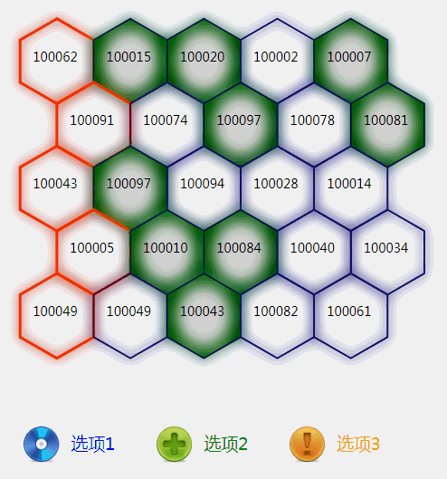

以上是效果图，本图表使用d3.js v4制作。图表主要功能是在六边形格子中显示数据，点击底部图标可以切换指定格子高亮显示，图表可以随浏览器任意缩放。
1.图表的主体结构是由正六边形组成，使用d3生成六边形可以使用d3-hexbin.js，生成六边形比较方便，只要给定中心点坐标和半径即可生成六边形路径，例如：
var r = 10; // 六边形半径
var pos = [[5,5],[10,10]]; // 六边形中心点坐标数组
var hexbin = d3.hexbin() // 使用hexbin.hexagon()即可生成路径
.radius(r);
var bins = hexbin(pos); // 得到生成后的六边形中心点坐标数组2.图表的主体使用了高斯模糊滤镜，使画面表现出发光效果，背景高亮颜色使用了颜色渐变滤镜。在svg中使用滤镜，必须定义在defs中。
高斯模糊滤镜：
// 创建defs
var defs = svg.append("defs");
// 添加模糊滤镜
var filterBlur = defs.append('filter')
.attr('id', 'filterBlur')
.attr('x', -1.2)
.attr('y', -1.2)
.attr('width', 4)
.attr('height', 4);
// 添加辅助滤镜
filterBlur.append('feOffset')
.attr('result', 'offOut')
.attr('in', 'SourceGraphic')
.attr('dx', 0)
.attr('dy', 0);
// 添加模糊滤镜
filterBlur.append('feGaussianBlur')
.attr('result', 'blurOut')
.attr('in', 'SourceGraphic')
.attr('stdDeviation', 2);
// 添加辅助滤镜
filterBlur.append('feBlend')
.attr('in', 'SourceGraphic')
.attr('in2', 'blurOut')
.attr('mode', 'multiply');重点说一下最后的feBlend，它的作用是把滤镜效果和原图混合起来。使用滤镜的话，直接给元素添加style('filter', 'url(#filterBlur)')即可。
背景高亮使用了颜色渐变滤镜：
// 添加放射性变换，生成空心填充颜色
var warnBg = defs.append("radialGradient")
.attr("id", "bg")
.attr('cx', 0.5)
.attr('cy', 0.5)
.attr('r', 0.5);
// 添加颜色
warnBg.append('stop')
.attr('offset', 0.5)
.attr('style', 'stop-color:rgb(200,200,200);stop-opacity:0.4');
warnBg.append('stop')
.attr('offset', 1)
.attr('style', 'stop-opacity:1;stop-color:rgb(123,123,123)');其中涉及到的关键性技术就是这些，其他方面只要使用通用的d3方法就可实现。
需要注意的是，程序的结构要预先规划好，最好把主要的功能模块放在单独一个函数中，方便调用和后期修改。
如果大家有什么想法或意见可以交流一下。